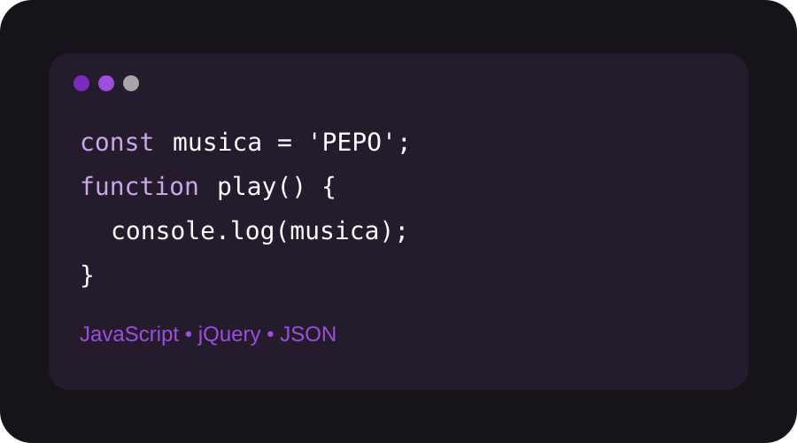

01 · Producto
Una plataforma para descubrir sonido nuevo
PEPO MUSIC SOUND combina una identidad musical con contenido digital para presentar bandas, canciones y propuestas creativas. El público principal son jóvenes interesados en descubrir artistas y compartir música.
Descubrir artistas sin perder la personalidad.
La idea es crear una experiencia visual y sencilla que conecte música, comunidad y tecnología.
Público objetivo
Personas jóvenes que escuchan música digital y quieren encontrar nuevos artistas.
Identidad
Morado para creatividad, negro para una estética moderna y blanco para claridad.
Tecnología
HTML, CSS, JavaScript, jQuery, JSON, Bootstrap, GitHub y Vercel.
PEPO MUSIC SOUND
Descubre nuevos artistas
Una identidad pensada para la música y las plataformas digitales.

Tecnología
La música también se construye con código
Este proyecto demuestra conceptos reales de desarrollo web.

Inteligencia artificial
Explora 15 IAs de Google
Una sección adicional para investigar herramientas actuales de IA.